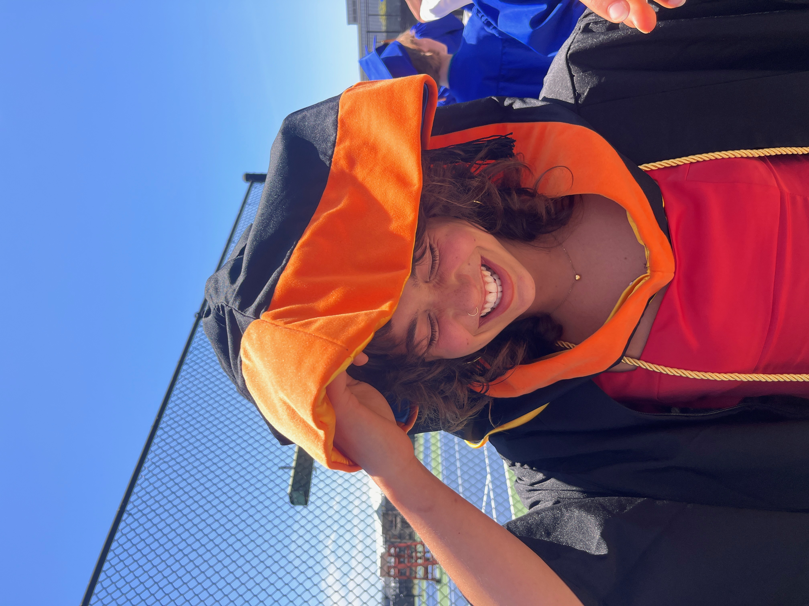
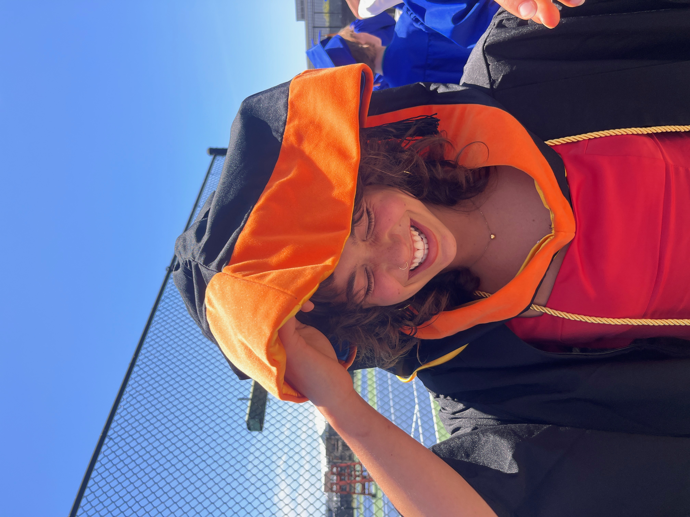

Hi, I'm Lily
I am a computer scientist working part-time as a contracted AI development specialist with Outlier AI. I recently completed my Master’s in Computer Science at UC Santa Cruz, where my thesis work focused on AI applications in sustainability and occluded object recognition (RootWise).
Prior to my graduate work, I earned my B.S. in Computer Science at UCSC, completing both degrees in a total four years. My academic and research interests include responsible AI, visual learning, and applied systems design. I enjoy building tools that are technically rigorous, grounded in real-world contexts, and creatively engineered.
You can view my resume [here] and GitHub [here]. I'm actively seeking full-time roles in software, AI/ML, or applied research.
 
